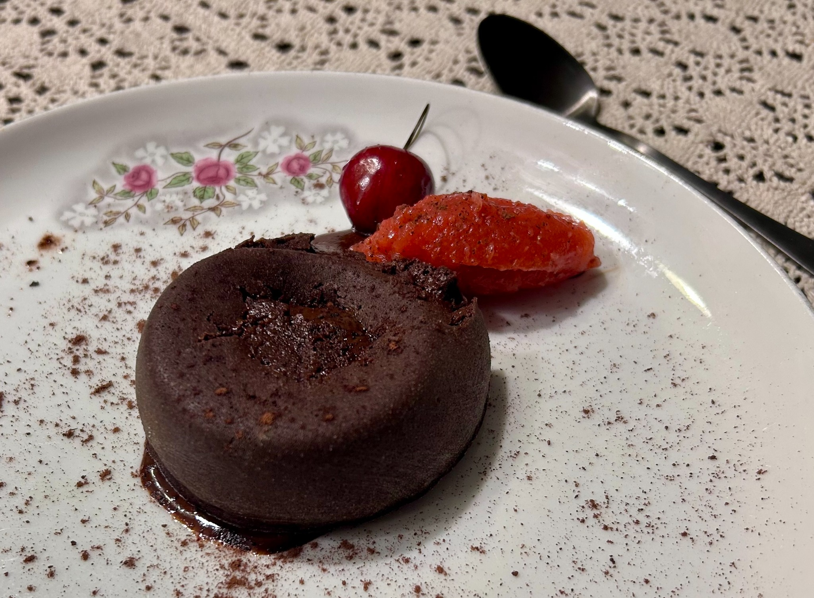
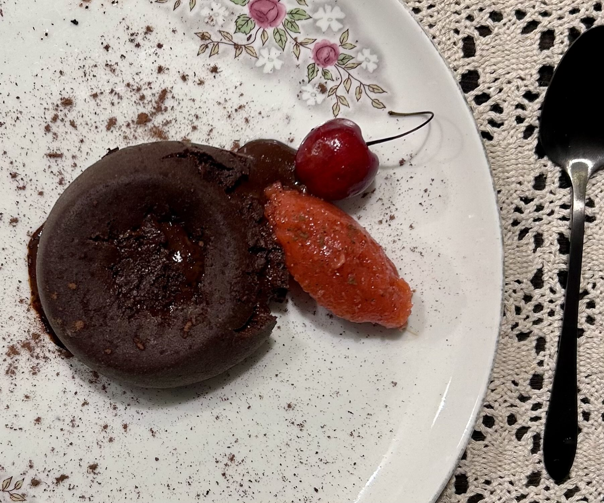

Dessert
Light Molten Lava Cake
A small dark-chocolate cake with a thin baked shell and a warm molten centre.


Ingredients
Chocolate base
- 2 tbsp butter
- 3/8 cup milk
- 125 g dark chocolate, more than 70%
- 1/4 tsp salt
- 1/4 tsp chili powder
- 1 tsp vanilla
Egg mixture
- 3 eggs + 1 egg yolk
- 3 tbsp sugar, about 50 g
- 1 tbsp flour, sifted
- 1 tbsp cocoa powder, sifted
Method
- Gently melt the butter in the milk. Remove from the heat, add the dark chocolate, salt, and chili powder, and stir until smooth. Stir in the vanilla.
- Whisk the eggs, egg yolk, and sugar together. Fold in the sifted flour and cocoa powder, then combine with the chocolate mixture until smooth.
- For OXO silicone molds, place the molds in a preheated muffin tray and bake at 455°F for about 4 minutes.
- For ramekins, butter and flour them first, then bake at 455°F for about 6 minutes.
Serving
Serve immediately while the centre is still molten. Fruit, ice-cream, whipped cream, etc. works especially well alongside the dark chocolate. Keep it simple or fancy.
Notes
Baking time may vary a lot with different ramekins, molds, ovens, techniques. Requires possibly a few trial-error runs, to achieve the perfectly molten interior lava with crispy well-done exterior. Ramekins are best to achieve that.
This recipe yields about 4 ramekins of 3.5in diameter.